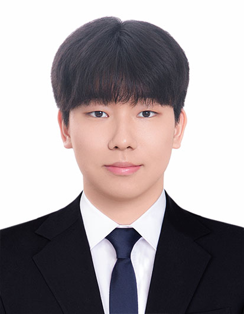

주식회사 디프리 · 소프트웨어 엔지니어
2024.12 – 2026.06.30프론트엔드 오너십을 기반으로 제품 개발부터 백엔드·인프라·보안구역 구축까지 역할 확장
- 비탈면 유지관리 플랫폼과 협회 업무 시스템의 요구사항 분석부터 설계·구현·배포·운영까지 담당했습니다.
- 고객 및 외주 개발사와 요구사항·일정을 조율하고 기술 문서와 사용자 매뉴얼을 작성했습니다.
FRONTEND-FOCUSED FULL-STACK SOFTWARE ENGINEER
React·TypeScript 기반 프론트엔드를 중심으로 백엔드와 인프라까지 문제 해결 범위를 확장해 온 소프트웨어 엔지니어입니다. 3D 점군·GIS 플랫폼을 단독 개발하고, 서비스 아키텍처 개선과 클라우드 비용 절감, CI/CD 운영을 통해 코드 밖의 비즈니스 성과까지 연결했습니다.

프론트엔드 오너십을 기반으로 제품 개발부터 백엔드·인프라·보안구역 구축까지 역할 확장
VDI 인프라 운영 및 WebRTC 기술 연구 · 8주
전자결재 · ERP · PMS 프론트엔드 단독 개발 · FE 기여도 100%
프론트엔드 단독 개발 및 Potree 뷰어 커스터마이징 · 백엔드 API 공동 개발 · 플랫폼 98% · 뷰어 80%
전체 서비스 인프라 설계 및 서버리스 유틸리티 개발 · 기여도 100% · 월 비용 60% 절감
보안구역 인프라 설계·구축 전담
핵심 API 공동 개발 및 과업지시서 작성부터 일정·결과물 검수까지 외주 전 과정 관리
6개 페이지 단독 설계·개발 및 Vercel 운영 · 기여도 100%
산학실전캡스톤 · 프론트엔드 기여도 100% · JWT 인증·API 구현
산학실전캡스톤 · 프론트엔드 개발